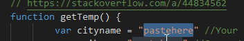
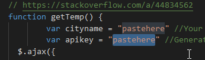

Thanks for Installing SlateWeather!
Below are some installation instructions.
SlateWeather is unfortunately not an out-of-the-box program, due to the fact that it uses a weather API. In order to use SlateWeather, you must complete the following steps:
Part one: API key
- Go to weatherapi.com, and sign up/register.
- Once signed up, in the "dashboards" section, you can generate an API key.
- Copy this API key, and don't give it to people. You can always regenerate one just in case, however.
- Now, go to c:/system/boot.
- Open slateweather.js in Monaco.
- In this JS file, there is an area at the top for you to paste an API key.

- Paste your API key in this field.
- Done!
Part two: Location config
- Open slateweather.js in Monaco.
- In this JS file, there is an area at the top for you to enter your city/area name. The more accurate your entry is, the more accurate your weather result will be. For example, entering your neighbourhood gives more accurate weather than entering your city.

- Enter your location here. Don't worry, if you generate your own key, nobody else can see it.
- Done!